Student Name: Annie Zhang
The DeepFloyd IF diffusion model was used, operating in two stages. Stage 1 generates low-resolution images, and Stage 2 refines them into high-resolution outputs. Random seed 280 was used consistently for reproducibility.
At the lower resolution of 64x64 produced by Stage 1, the generated images effectively convey the overall structure and color scheme related to the prompts but lack intricate details, resulting in more abstract visuals. In contrast, the higher resolution of 256x256 achieved in Stage 2 significantly enhances these initial outputs by introducing finer details and textures, making the images appear more realistic and coherent. Adjusting the number of inference steps (e.g., from 20 to 80) highlights a trade-off: fewer steps result in quicker generation but less polished images, whereas more steps improve the output quality at the cost of increased computation time.
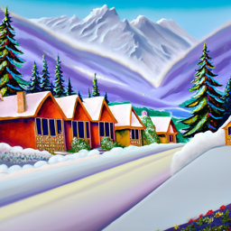
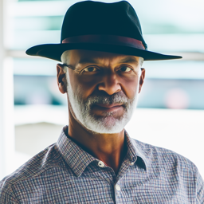


Reflection: Higher resolutions (256x256) add significant detail and realism. Increased inference steps (e.g., 80) improve quality but require more computation time.
Diffusion models create images by reversing a process that incrementally adds noise. Starting with an original clean image, \( x_0 \), noise is gradually introduced at each timestep \( t \), resulting in increasingly noisy versions, \( x_t \), until the image becomes pure noise at \( t = T \). The purpose of the diffusion model is to predict and remove this noise step by step, allowing the recovery of \( x_0 \) or partially denoised intermediates like \( x_{t-1} \).
The generation process begins with a completely random Gaussian noise sample, \( x_T \), at \( T = 1000 \) (in the case of DeepFloyd). The model utilizes pre-learned noise coefficients, \( \bar{\alpha}_t \), to estimate the noise in \( x_t \). This noise is subtracted to produce a cleaner image for the preceding timestep. This iterative process continues until the original clean image, \( x_0 \), is reconstructed. The coefficients \( \bar{\alpha}_t \) and the sequence of denoising steps are pre-determined during the model's training phase.
The forward process incrementally adds noise to a clean image \( x_0 \), generating noisy images \( x_t \). Below are the original campanile image, followed by examples at noise levels \( t = 250, 500, 750 \):
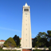
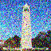
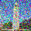
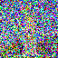
One of the important components of diffusion models is the forward process, where a clean image \( x_0 \) is incrementally corrupted with noise over a series of timesteps, producing increasingly noisy versions \( x_t \). This process is mathematically defined as:
The above equation can also be expressed as:
where \( \epsilon \sim \mathcal{N}(0, 1) \). Here, \( x_t \) is sampled from a Gaussian distribution with a mean of \( \sqrt{\bar{\alpha}_t} x_0 \) and a variance of \( (1 - \bar{\alpha}_t) \). This forward process is designed to both scale the original image \( x_0 \) by \( \sqrt{\bar{\alpha}_t} \) and add Gaussian noise.In this approach, we applied Gaussian blur as a classical denoising technique. The blur was configured with a kernel size of 7 and a standard deviation (\( \sigma \)) of 1.3 on the same images that were produced above in 1.1.
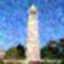
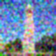
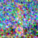
A pretrained diffusion model was employed to remove noise from the images. The denoiser, implemented using stage_1.unet, is a U-Net-based architecture that has been trained on an extensive dataset of image pairs, represented as \( (x_0, x_t) \). This model is designed to predict and subtract Gaussian noise from noisy inputs, effectively reconstructing or closely approximating the original clean image, \( x_0 \).
The U-Net architecture is conditioned on the specific timestep \( t \), allowing it to systematically refine the image at each stage of denoising. From left to right, the noise levels shown below are 250, 500, and 750 while the top row is the noisy image from before and the bottom row is the one-step denoising.
To efficiently perform iterative denoising, we define a sequence of timesteps, referred to as strided_timesteps. This sequence skips over certain steps in the denoising process, starting from the noisiest image (corresponding to the highest \( t \)) and ending with the clean image (corresponding to the lowest \( t \)). The final timestep in this list, strided_timesteps[-1], represents a fully denoised image. A typical stride interval, such as 30, works well for this approach.
At each \( i \)-th denoising step, the model processes the image at \( t = \text{strided_timesteps}[i] \) and refines it to \( t' = \text{strided_timesteps}[i + 1] \), producing a less noisy version. The refinement is computed using the formula:
Where:
alphas_cumprod.
The noise term \( \nu_\sigma \) is generated by the model (e.g., DeepFloyd), and the computation process is abstracted using the add_variance function. This iterative refinement progressively reduces noise, enabling the transformation of noisy inputs into a clean approximation.
The first two rows are the iteratively denoised image, followed by the image at time step 90, 240, 390, 540, and 690 while the third row is the original campanile image, the one step cleaned version, and the gaussian blurred version
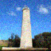
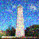
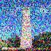
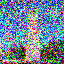
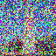
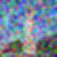
Starting with random noise (\( i_{\text{start}} = 0 \)), the diffusion model generated images through iterative refinement:
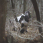
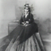
The quality of the generated images in the previous section was suboptimal, with some outputs being completely incoherent. To enhance the quality of these images, we employ a technique called Classifier-Free Guidance (CFG).
CFG works by combining a conditional noise estimate (\( \epsilon_c \)) with an unconditional noise estimate (\( \epsilon_u \)). The final noise estimate is calculated using the formula:
Here, \( \gamma \) is a parameter that controls the influence of CFG. For \( \gamma = 0 \), the output corresponds to the unconditional noise estimate, while \( \gamma = 1 \) yields the conditional noise estimate. The real improvement occurs when \( \gamma > 1 \), producing significantly higher-quality images. Here are some images with gamma = 7.
In this task, we start with the original test image, introduce a small amount of noise, and project it back onto the image manifold without using any conditioning. This technique produces images that resemble the test image but exhibit slight variations due to the introduced noise. The last image in the second row is the final result while the image after in the 3rd row is the original test image of the campanile.
This process modifies existing images by adding noise and guiding them back to a natural image space. Examples of transformations using noise levels \( i_{\text{start}} = 1, 3, 5, 7, 10, 20 \):
Original Images:
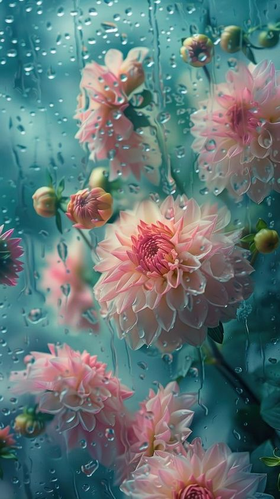
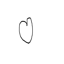
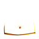
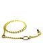
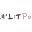
Given an initial image \( x_{\text{orig}} \) and a binary mask \( \mathbf{m} \), the model generates a new image by preserving the original content where \( \mathbf{m} = 0 \) while creating new content where \( \mathbf{m} = 1 \).
The process involves running the diffusion denoising loop. At each iteration, after generating \( x_t \), the model adjusts \( x_t \) to match the original image \( x_{\text{orig}} \) wherever \( \mathbf{m} = 0 \). Mathematically, this is expressed as:
\( x_t \gets \mathbf{m} x_t + (1 - \mathbf{m}) \text{forward}(x_{\text{orig}}, t) \)
In essence, the model updates all regions inside the edit mask \( \mathbf{m} \) through the diffusion process while keeping the regions outside the mask consistent with the original image, ensuring the correct noise level for the given timestep \( t \).


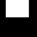
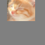
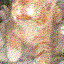
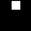
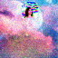
In this section, we expand upon image-to-image translation by incorporating a descriptive text prompt to influence the generated output. The provided text prompt serves as a guide, enabling more precise and targeted transformations in the generated content.
Test Image: Campanile
Text Prompt: "a rocket ship"
Test Image: Rainbow
Text Prompt: "a man with a hat"
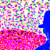
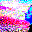
Test Image: hearts
Text Prompt: "Hearts"


In this section, we leverage diffusion models to craft optical illusions by skillfully combining various transformations and denoising processes. The method involves the following steps:
This process effectively integrates complementary information from two prompts, producing images with intriguing visual effects.
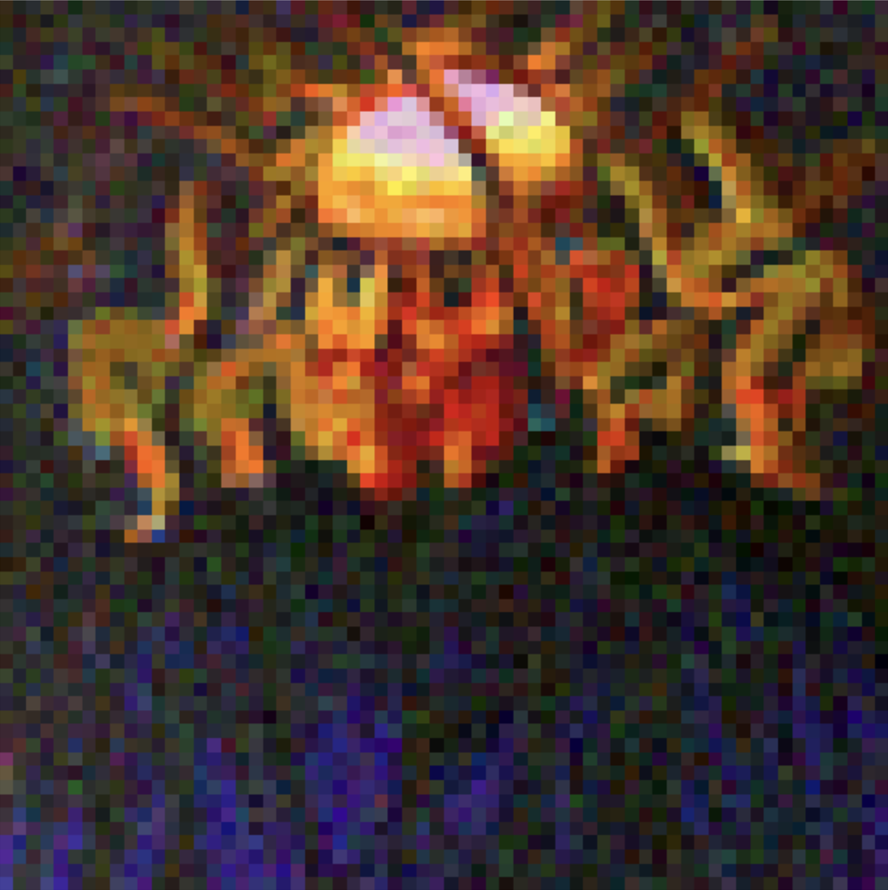
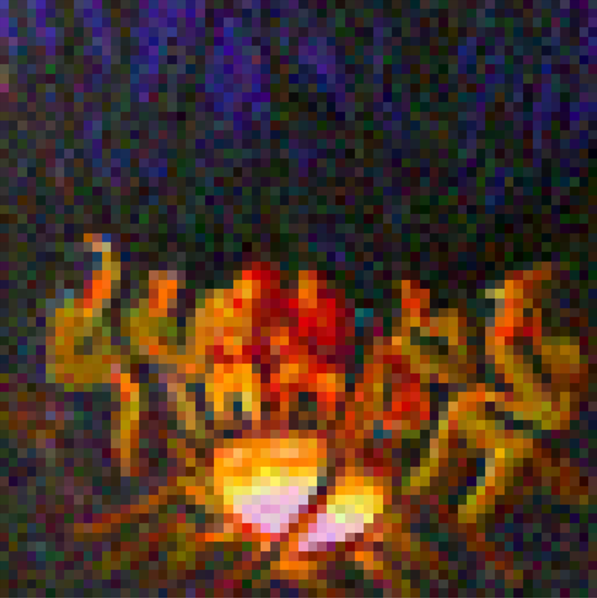
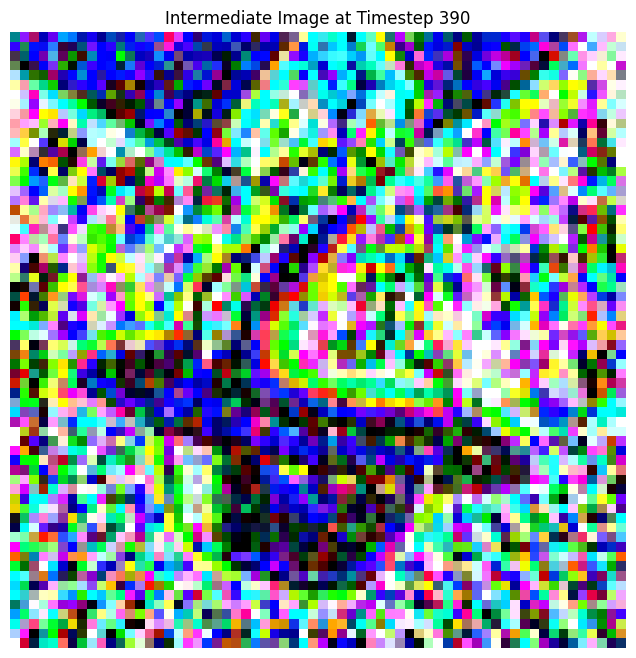

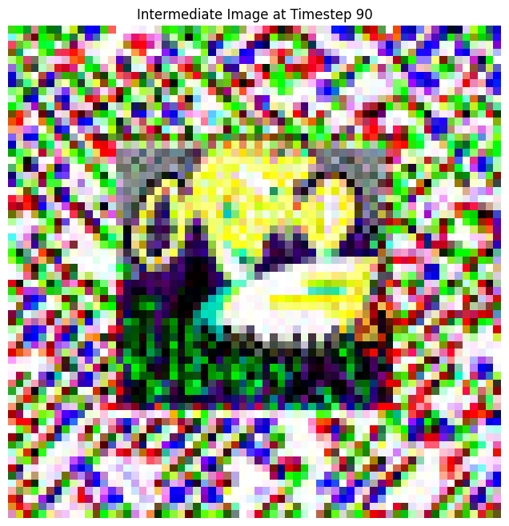
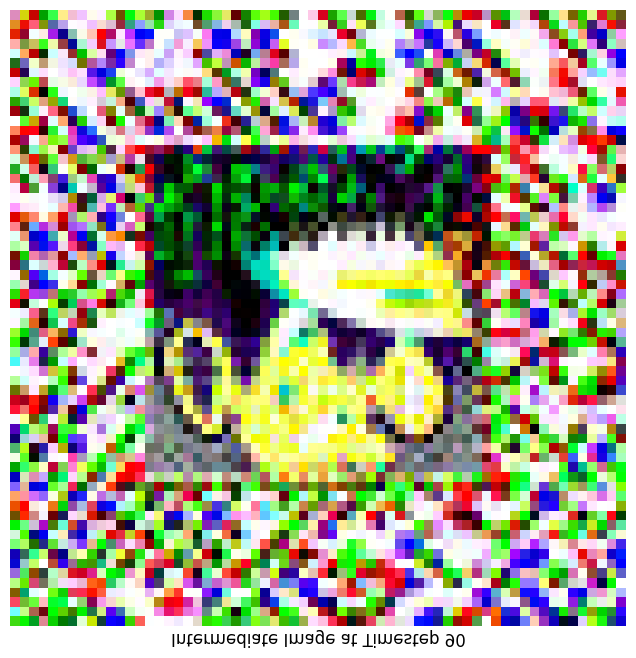
To generate hybrid images using a diffusion model, we create a composite noise estimate \( \epsilon \). This is done by computing the noise for two different text prompts and then merging the low-frequency elements from one estimate with the high-frequency components of the other.
Here, \( f_{\text{lowpass}} \) is a low-pass filter, \( f_{\text{highpass}} \) is a high-pass filter, and \( p_1 \), \( p_2 \) represent two different text prompt embeddings. The resulting noise estimate \( \epsilon \) produces a hybrid image that blends characteristics from both prompts. Here the images are a coast and a skull, a man and a snowy village, and a coast and a snowy village.
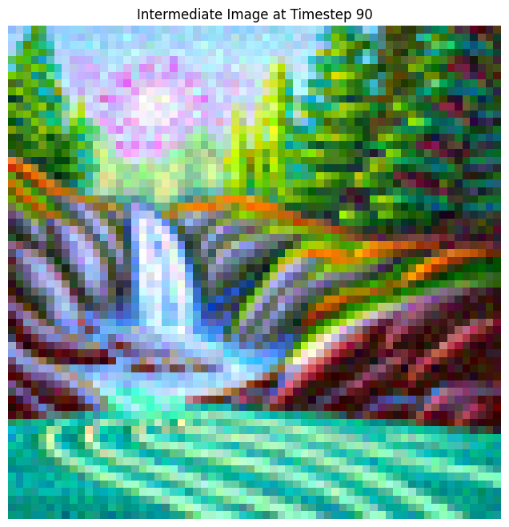 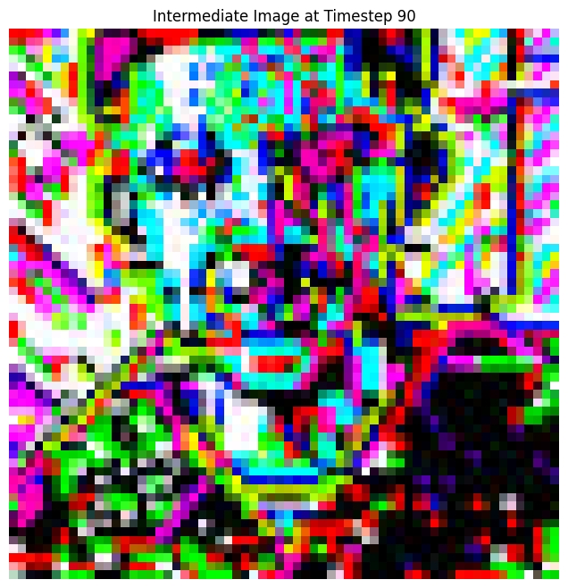 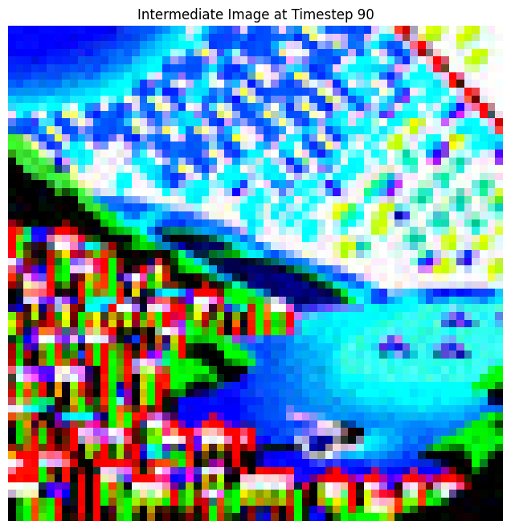
To train the denoiser, we must generate pairs of training data \((z, x)\), where \(x\) represents a clean MNIST digit. For each training batch, the noisy version \(z\) is created from \(x\) using the following noising process:
Here, \(\sigma\) is the noise level, and \(\epsilon\) is sampled from a standard normal distribution. These generated pairs serve as the foundation for training the model.
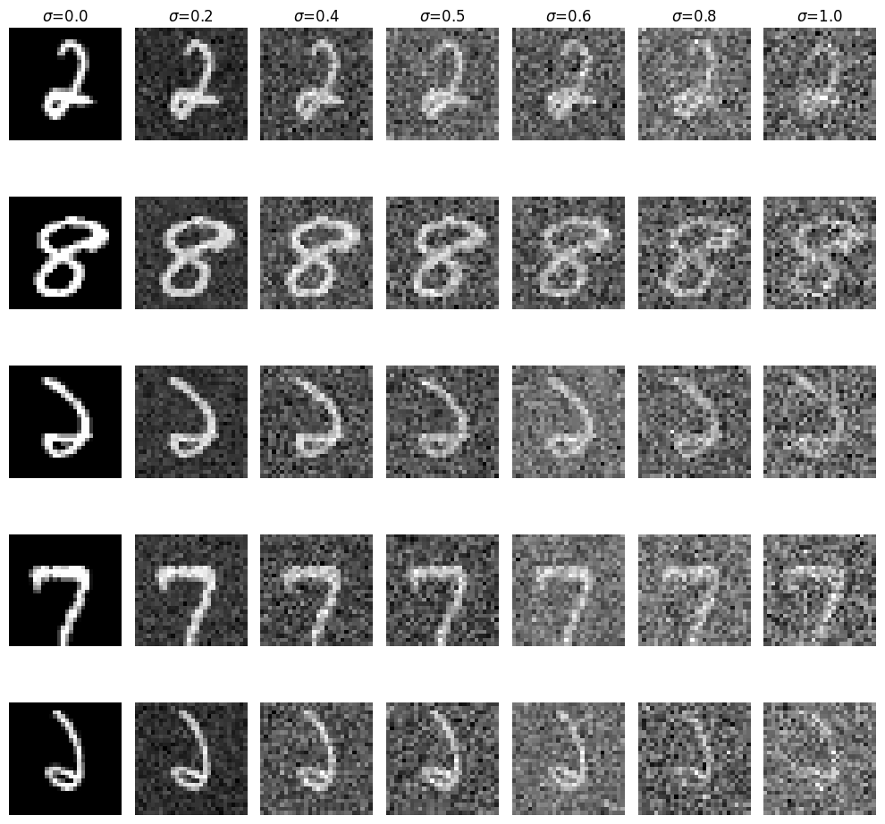 Here are some of the noisy data and the training loss: 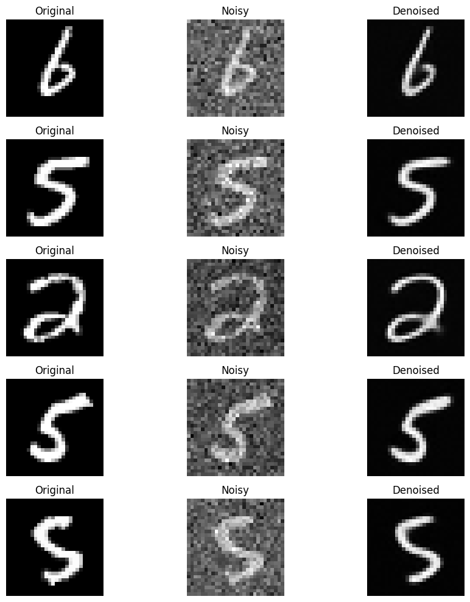 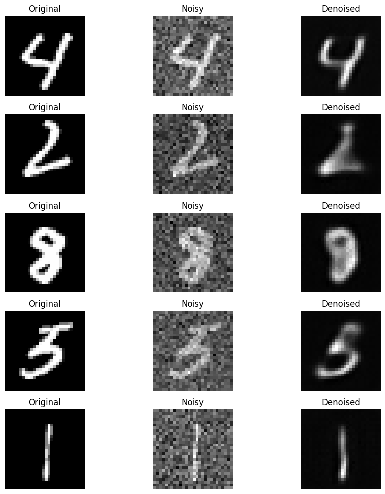 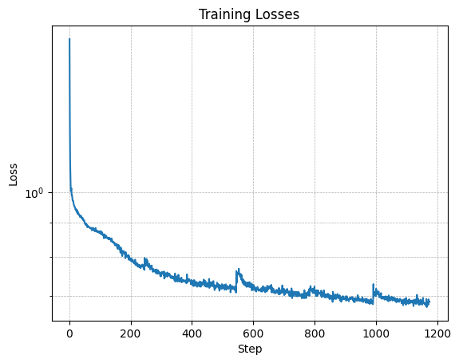 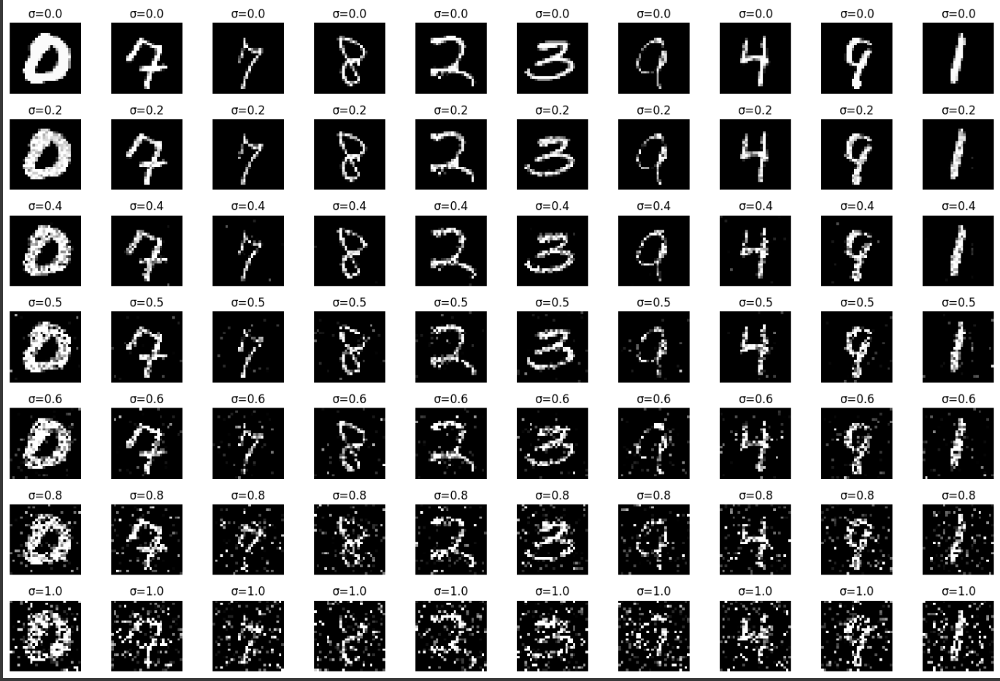 A time-conditioned UNet was implemented to predict noise and reconstruct images iteratively. Results are shown below: Here is the training loss of the Class Conditioned Model 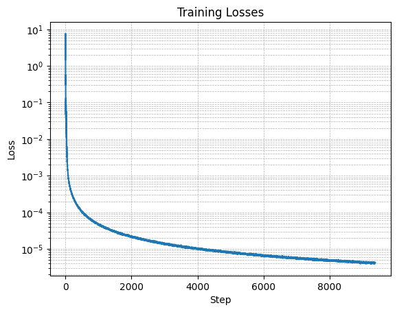 Throught this project, I was provided hands-on experience with diffusion models and their applications.
Part B: Diffusion Models from Scratch
Part 1: Training a Single-Step Denoising UNet
Training Data Pairs
\[
z = x + \sigma \epsilon, \quad \epsilon \sim \mathcal{N}(0, \mathbf{I}),
\]
Part 2: Training a Diffusion Model
Training
torchvision.datasets.MNIST for both training and testing. Training is performed exclusively on the training set, with shuffling applied prior to creating the dataloader. Batch size: 256. Training spans 5 epochs.
Final Reflection